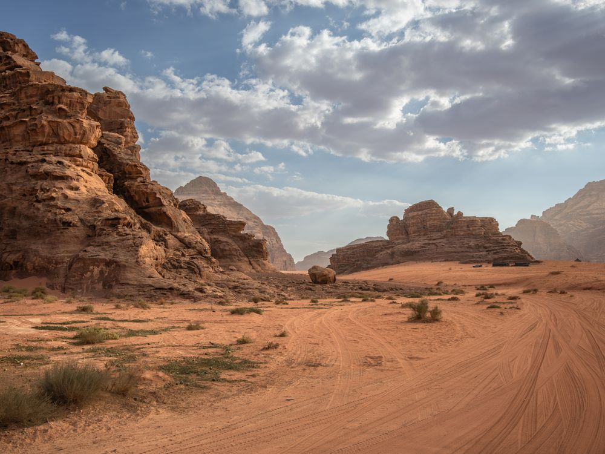
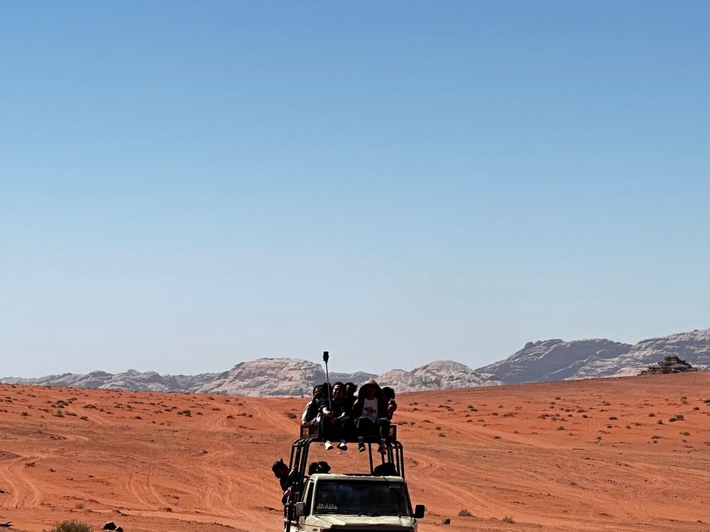

Petra, Wadi Rum & the Dead Sea
8 days · 7–14 November 2026 · from £1,980
The idea
Almost everyone sees Petra in a day, off a coach, at eleven in the morning with four thousand other people. We give it two, and walk in through the Siq before the gates get busy — which is the difference between a photograph and a memory.
November is the right month for it: warm in the day, cold enough at night in Wadi Rum that the camp fire earns its place.


Day by day
-
1
Arrive Amman
Transfers from the airport whenever you land. Dinner together in Jabal Amman and a run-through of the week.
-
2
Jerash and the Citadel
North in the morning to one of the better-preserved Roman cities anywhere, back for the Citadel at golden hour.
-
3
South to Dana
Along the King's Highway with stops at Madaba and Mount Nebo. Night in a stone guesthouse on the edge of the Dana reserve.
-
4
Dana to Little Petra
A five-hour walk down through the reserve with a local guide — the quiet day before the busy ones.
-
5
Petra, early
Through the Siq at opening. The Treasury, the Street of Facades, the theatre, and up to the High Place of Sacrifice before lunch.
-
6
Petra to Wadi Rum
The 800 steps to the Monastery first thing, then south into the desert. Jeeps to camp, dinner cooked underground, and no light pollution at all.
-
7
Wadi Rum to the Dead Sea
Sunrise over the camp, a last hour among the rock bridges, then north to float in water you cannot sink in.
-
8
Home
Transfers to Amman airport for any flight time.
What's included
In the price
- 7 nights' accommodation, including the Bedouin camp
- All ground transport and airport transfers
- Jordan Pass — Petra two-day entry and all sites
- Local guides at Petra, Jerash and Dana
- Breakfast daily, plus 5 dinners and 2 lunches
- Me, for the whole trip
Not in the price
- International flights to and from Amman
- Travel insurance (required)
- Jordanian visa, covered by the Jordan Pass for most nationalities
- Meals not listed above, and drinks
- Optional single room supplement